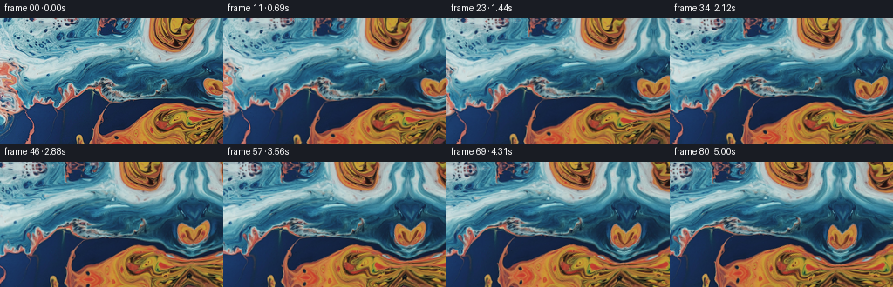
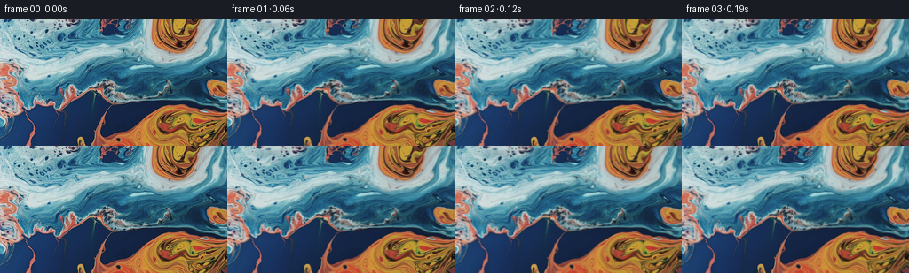

← 本轮 smoke 总览traex/GPT-6.1-Sol · 0002_s0
text · 256×144 · 16.0 FPS · 81 帧 · 状态 complete · 输出 tokens 7857
原始任务a close up of a blue and orange liquid, camera pans right
当前保存结果
已保存候选与代码修改
这里按时间展示外部捕获的候选，每份均可单独播放。保存新版本不等于完成视觉检查；下方工具证据记录实际看过的图。
候选 01 · 2026-11-09T00:19:57.947119+00:00 · 点开播放与检查图
inspection.png

transition_check.png

代码变化
--- 上一保存版本
+++ 本次保存版本
@@ -0,0 +1,134 @@
+"""Animate the supplied RGB photograph with an advected liquid surface and pan.
+
+No external images or learned assets are used. All visible texture is sampled
+from first_frame.png; off-camera texture is continued by a curved reflection.
+The velocity field is analytic, incompressible, and integrated on coordinates,
+not on RGB, so the fine photographic detail does not diffuse over time.
+"""
+from pathlib import Path
+import json
+import numpy as np
+from PIL import Image
+from artifact_io import save
+
+ROOT = Path(__file__).resolve().parent
+
+
+def bilinear(a, x, y):
+ h, w = a.shape[:2]
+ x = np.clip(x, 0, w - 1)
+ y = np.clip(y, 0, h - 1)
+ ix = np.minimum(np.floor(x).astype(np.int32), w - 2)
+ iy = np.minimum(np.floor(y).astype(np.int32), h - 2)
+ u = x - ix
+ v = y - iy
+ if a.ndim == 3:
+ u, v = u[..., None], v[..., None]
+ return ((a[iy, ix] * (1-u) + a[iy, ix+1] * u) * (1-v) +
+ (a[iy+1, ix] * (1-u) + a[iy+1, ix+1] * u) * v)
+
+
+def reflect(q, extent):
+ q = np.mod(q, 2 * extent)
+ return np.where(q <= extent, q, 2 * extent - q)
+
+
+def source_sample(source, x, y):
+ # Continue the intricate liquid strata rather than introducing unrelated
+ # colors at the newly revealed right edge. Curvature breaks mirror symmetry.
+ q = np.maximum(x - 255.0, 0.0)
+ a = 1 - np.exp(-q / 13.0)
+ xx = np.where(x <= 255, x,
+ 255 - q * (0.92 + 0.12 * np.sin(y / 29.0 + .4))
+ - 3.0 * a * np.sin(q / 19.0 + y / 43.0))
+ yy = y + a * (6.0 * np.sin(q / 37 + y / 57.0) + .10 * q)
+ # The normal camera region is left untouched. Vertical reflected margins
+ # are only a few pixels and receive gentle liquid-driven motion.
+ xx = reflect(xx, source.shape[1] - 1)
+ yy = reflect(yy, source.shape[0] - 1)
+ return bilinear(source, xx, yy)
+
+
+def velocity(x, y):
+ # Spectral stream-function modes; (dpsi/dy, -dpsi/dx) has zero divergence.
+ vx = np.zeros_like(x)
+ vy = np.zeros_like(y)
+ for wavelength, angle, speed, phase in [
+ (206.0, .55, 1.50, .7),
+ (122.0, 2.10, .82, 2.1),
+ (77.0, -.82, .44, .1),
+ (46.0, 1.30, .19, 1.7)]:
+ k = 2 * np.pi / wavelength
+ co, si = np.cos(angle), np.sin(angle)
+ wave = np.cos(k * (co*x + si*y) + phase)
+ vx += speed * si * wave
+ vy -= speed * co * wave
+ # Wide, smooth eddies gently curl the colored liquid interfaces.
+ for cx, cy, radius, omega in [
+ (195., 20., 39., -.046),
+ (175., 121., 48., .043),
+ (94., 56., 54., -.026),
+ (248., 77., 28., .044)]:
+ dx, dy = x-cx, y-cy
+ attenuation = np.exp(-(dx*dx+dy*dy)/(2*radius*radius))
+ vx -= omega * dy * attenuation
+ vy += omega * dx * attenuation
+ return vx + .24, vy + .08
+
+
+def generate():
+ spec = json.loads((ROOT / 'task_spec.json').read_text())
+ source = np.asarray(Image.open(ROOT / 'first_frame.png').convert('RGB'))
+ n, h, w = spec['frames'], spec['height'], spec['width']
+ fps = float(spec['fps'])
+ assert source.shape == (h, w, 3)
+ rgb = source.astype(np.float32)
+ frames = np.empty((n, h, w, 3), dtype=np.uint8)
+ frames[0] = source
+
+ # Coordinate advection in a generously padded world canvas.
+ pad = 48
+ grid_y, grid_x = np.mgrid[-pad:h+pad, -pad:w+160].astype(np.float32)
+ position = np.stack([grid_x, grid_y], axis=-1)
+ material = position.copy()
+ vx, vy = velocity(grid_x, grid_y)
+ dt = 1.0/fps
+ vmx, vmy = velocity(grid_x - .5*dt*vx, grid_y - .5*dt*vy)
+ footx = grid_x - dt*vmx + pad
+ footy = grid_y - dt*vmy + pad
+ screen_y, screen_x = np.mgrid[0:h, 0:w].astype(np.float32)
+
+ for i in range(1, n):
+ t = i/fps
+ material = bilinear(material, footx, footy).astype(np.float32)
+ # Positive camera translation moves existing material to screen left.
+ pan = 12.2 * t
+ camera_x = screen_x + pan
+ camera_y = screen_y + .30*np.sin(t*.52)
+ traced = bilinear(material, camera_x+pad, camera_y+pad)
+ sx, sy = traced[..., 0], traced[..., 1]
+
+ # Small travelling surface ripples refract the source, on top of the
+ # slower liquid advection. Subtract the initial phase for continuity.
+ p1 = camera_x*.161 + camera_y*.068
+ p2 = camera_x*.054 - camera_y*.196 + .9
+ ramp = 1 - np.exp(-t/1.1)
+ sx += ramp * (.57*np.sin(p1-1.47*t) + .26*np.sin(p2+1.03*t))
+ sy += ramp * (.41*np.cos(p1-1.47*t) + .38*np.sin(p2+1.03*t))
+ image = source_sample(rgb, sx, sy)
+
+ # Very modest mobile glints, restricted to the pale reflective liquid.
+ lum = image[..., 0]*.299 + image[..., 1]*.587 + image[..., 2]*.114
+ shine = np.clip((lum-110.)/95., 0., 1.)
+ glint = (np.sin(camera_x*.051 + camera_y*.039 - t*.94)
+ - np.sin(camera_x*.051 + camera_y*.039)) * 1.6 * ramp
+ image += (glint * shine)[..., None]
+ frames[i] = np.clip(np.rint(image), 0, 255).astype(np.uint8)
+ return frames
+
+
+if __name__ == '__main__':
+ result = generate()
+ assert np.array_equal(result[0], np.asarray(Image.open(ROOT/'first_frame.png').convert('RGB')))
+ save(result, ROOT)
+ print('Saved', result.shape, result.dtype)
可观测工具行为
命令 1 · 2026-11-09T00:17:16.479773+00:00/bin/bash -lc "ls -la && cat prompt.txt && printf '\\n---RULES---\\n' && cat GENERATION_RULES.md"
exit 0 命令 2 · 2026-11-09T00:17:26.919580+00:00/bin/bash -lc "cat task_spec.json && cat artifact_io.py && python - <<'PY'
from PIL import Image
import numpy as np
im=np.asarray(Image.open('first_frame.png').convert('RGB'))
print('shape',im.shape)
print('min/max',im.min((0,1)), im.max((0,1)))
print('mean/std',im.mean((0,1)), im.std((0,1)))
print('samples in 8x8 blocks (RGB mean):')
for y in range(0,144,12):
print(y,[tuple(np.round(im[y:y+12,x:x+16].mean((0,1))).astype(int)) for x in range(0,256,16)])
print('COLOR MAP (B blue, C cyan, O orange, R red, W white, K dark)')
for y in range(0,144,3):
s=''
for x in range(0,256,4):
r,g,b=im[y:y+3,x:x+4].mean((0,1))
if max(r,g,b)<60: c='k'
elif min(r,g,b)>180: c='w'
elif b>r*1.15: c='b' if b>g*1.3 else 'c'
elif r>b*1.15:c='o' if g>70 else 'r'
else: c='.'
s+=c
print(s)
PY"exit 0 命令 3 · 2026-11-09T00:17:35.989769+00:00/bin/bash -lc "python - <<'PY'
import importlib.util
for k in ['scipy','cv2','numpy','PIL']:
print(k, bool(importlib.util.find_spec(k)))
from PIL import Image
import numpy as np
im=np.array(Image.open('first_frame.png'))
g=(im[:,:,0]*.299+im[:,:,1]*.587+im[:,:,2]*.114)
s=' .,:;irsXAM#@'
for y in range(0,144,3):
print(''.join(s[min(len(s)-1,int(g[y:y+3,x:x+3].mean()/256*len(s)))] for x in range(0,256,3)))
PY"exit 0 命令 4 · 2026-11-09T00:17:52.684075+00:00/bin/bash -lc "python - <<'PY'
from PIL import Image
import numpy as np
im=np.array(Image.open('first_frame.png')).astype(float)
# Color-class detail in right 64 columns, to guide offscreen continuation.
for y in range(0,144,2):
s=''
for x in range(192,256,2):
r,g,b=im[y:y+2,x:x+2].mean((0,1))
if r>1.2*b and r>1.08*g: c='O' if r>120 else 'o'
elif b>1.5*r: c='B' if g<100 else 'C'
elif b>1.1*r:c='c'
elif min(r,g,b)>170:c='W'
elif max(r,g,b)<70:c='.'
else:c='-'
s+=c
print(f'{y:3}',s)
print('Spatial texture RMS',np.sqrt(np.mean(np.diff(im,axis=1)**2)),np.sqrt(np.mean(np.diff(im,axis=0)**2)))
PY"exit 0 命令 5 · 2026-11-09T00:18:21.273711+00:00/bin/bash -lc "python - <<'PY'
from PIL import Image
import numpy as np
im=np.array(Image.open('first_frame.png'))
# Texture detail and color composition; no image viewer.
for y0,y1 in [(0,40),(40,90),(90,144)]:
for x0,x1 in [(0,80),(80,160),(160,256)]:
a=im[y0:y1,x0:x1].astype(float)
print((x0,y0,x1,y1),'orange',np.mean((a[:,:,0]>1.2*a[:,:,2])&(a[:,:,0]>1.1*a[:,:,1])),'blue',np.mean(a[:,:,2]>1.3*a[:,:,0]),'sd',a.std((0,1)))
print('file',Image.open('first_frame.png').mode)
PY"exit 0 命令 6 · 2026-11-09T00:19:24.200898+00:00/bin/bash -lc "cat > generate.py <<'PY'
\"\"\"Animate the supplied RGB photograph with an advected liquid surface and pan.
No external images or learned assets are used. All visible texture is sampled
from first_frame.png; off-camera texture is continued by a curved reflection.
The velocity field is analytic, incompressible, and integrated on coordinates,
not on RGB, so the fine photographic detail does not diffuse over time.
\"\"\"
from pathlib import Path
import json
import numpy as np
from PIL import Image
from artifact_io import save
ROOT = Path(__file__).resolve().parent
def bilinear(a, x, y):
h, w = a.shape[:2]
x = np.clip(x, 0, w - 1.00001)
y = np.clip(y, 0, h - 1.00001)
ix = np.floor(x).astype(np.int32)
iy = np.floor(y).astype(np.int32)
u = x - ix
v = y - iy
if a.ndim == 3:
u, v = u[..., None], v[..., None]
return ((a[iy, ix] * (1-u) + a[iy, ix+1] * u) * (1-v) +
(a[iy+1, ix] * (1-u) + a[iy+1, ix+1] * u) * v)
def reflect(q, extent):
q = np.mod(q, 2 * extent)
return np.where(q <= extent, q, 2 * extent - q)
def source_sample(source, x, y):
# Continue the intricate liquid strata rather than introducing unrelated
# colors at the newly revealed right edge. Curvature breaks mirror symmetry.
q = np.maximum(x - 255.0, 0.0)
a = 1 - np.exp(-q / 13.0)
xx = np.where(x <= 255, x,
255 - q * (0.92 + 0.12 * np.sin(y / 29.0 + .4))
- 3.0 * a * np.sin(q / 19.0 + y / 43.0))
yy = y + a * (6.0 * np.sin(q / 37 + y / 57.0) + .10 * q)
# The normal camera region is left untouched. Vertical reflected margins
# are only a few pixels and receive gentle liquid-driven motion.
xx = reflect(xx, source.shape[1] - 1)
yy = reflect(yy, source.shape[0] - 1)
return bilinear(source, xx, yy)
def velocity(x, y):
# Spectral stream-function modes; (dpsi/dy, -dpsi/dx) has zero divergence.
vx = np.zeros_like(x)
vy = np.zeros_like(y)
for wavelength, angle, speed, phase in [
(206.0, .55, 1.50, .7),
(122.0, 2.10, .82, 2.1),
(77.0, -.82, .44, .1),
(46.0, 1.30, .19, 1.7)]:
k = 2 * np.pi / wavelength
co, si = np.cos(angle), np.sin(angle)
wave = np.cos(k * (co*x + si*y) + phase)
vx += speed * si * wave
vy -= speed * co * wave
# Wide, smooth eddies gently curl the colored liquid interfaces.
for cx, cy, radius, omega in [
(195., 20., 39., -.046),
(175., 121., 48., .043),
(94., 56., 54., -.026),
(248., 77., 28., .044)]:
dx, dy = x-cx, y-cy
attenuation = np.exp(-(dx*dx+dy*dy)/(2*radius*radius))
vx -= omega * dy * attenuation
vy += omega * dx * attenuation
return vx + .24, vy + .08
def generate():
spec = json.loads((ROOT / 'task_spec.json').read_text())
source = np.asarray(Image.open(ROOT / 'first_frame.png').convert('RGB'))
n, h, w = spec['frames'], spec['height'], spec['width']
fps = float(spec['fps'])
assert source.shape == (h, w, 3)
rgb = source.astype(np.float32)
frames = np.empty((n, h, w, 3), dtype=np.uint8)
frames[0] = source
# Coordinate advection in a generously padded world canvas.
pad = 48
grid_y, grid_x = np.mgrid[-pad:h+pad, -pad:w+160].astype(np.float32)
position = np.stack([grid_x, grid_y], axis=-1)
material = position.copy()
vx, vy = velocity(grid_x, grid_y)
dt = 1.0/fps
vmx, vmy = velocity(grid_x - .5*dt*vx, grid_y - .5*dt*vy)
footx = grid_x - dt*vmx + pad
footy = grid_y - dt*vmy + pad
screen_y, screen_x = np.mgrid[0:h, 0:w].astype(np.float32)
for i in range(1, n):
t = i/fps
material = bilinear(material, footx, footy).astype(np.float32)
# Positive camera translation moves existing material to screen left.
pan = 12.2 * t
camera_x = screen_x + pan
camera_y = screen_y + .30*np.sin(t*.52)
traced = bilinear(material, camera_x+pad, camera_y+pad)
sx, sy = traced[..., 0], traced[..., 1]
# Small travelling surface ripples refract the source, on top of the
# slower liquid advection. Subtract the initial phase for continuity.
p1 = camera_x*.161 + camera_y*.068
p2 = camera_x*.054 - camera_y*.196 + .9
ramp = 1 - np.exp(-t/1.1)
sx += ramp * (.57*np.sin(p1-1.47*t) + .26*np.sin(p2+1.03*t))
sy += ramp * (.41*np.cos(p1-1.47*t) + .38*np.sin(p2+1.03*t))
image = source_sample(rgb, sx, sy)
# Very modest mobile glints, restricted to the pale reflective liquid.
lum = image[..., 0]*.299 + image[..., 1]*.587 + image[..., 2]*.114
shine = np.clip((lum-110.)/95., 0., 1.)
glint = (np.sin(camera_x*.051 + camera_y*.039 - t*.94)
- np.sin(camera_x*.051 + camera_y*.039)) * 1.6 * ramp
image += (glint * shine)[..., None]
frames[i] = np.clip(np.rint(image), 0, 255).astype(np.uint8)
return frames
if __name__ == '__main__':
result = generate()
assert np.array_equal(result[0], np.asarray(Image.open(ROOT/'first_frame.png').convert('RGB')))
save(result, ROOT)
print('Saved', result.shape, result.dtype)
PY
python generate.py"exit 1 命令 7 · 2026-11-09T00:19:53.820229+00:00/bin/bash -lc "python generate.py && python - <<'PY'
from PIL import Image
import numpy as np
import cv2
from pathlib import Path
z=np.load('pixels.npz')['pixels']
f=np.stack([(z>>16)&255,(z>>8)&255,z&255],axis=-1).transpose(2,0,1,3).astype(np.uint8)
print('shape/dtype',f.shape,f.dtype)
print('first exact',np.array_equal(f[0],np.asarray(Image.open('first_frame.png'))))
print('frame diffs mean',np.abs(np.diff(f.astype(float),axis=0)).mean((1,2,3))[[0,1,19,39,59,79]])
for i in [0,20,40,60,80]:
a=f[i].astype(float)
print(i,'mean/std',a.mean((0,1)).round(2),a.std((0,1)).round(2),'edge',np.abs(np.diff(a,axis=1)).mean().round(2))
for i in [0,20,40,60]:
gray=lambda a:cv2.cvtColor(a,cv2.COLOR_RGB2GRAY)
flow=cv2.calcOpticalFlowFarneback(gray(f[i]),gray(f[i+1]),None,.5,3,15,3,5,1.2,0)
print('flow',i,np.median(flow[12:-12,12:-48],axis=(0,1)).round(3))
# Guard against a conspicuous seam in the continuation at the last frame.
edge=np.abs(np.diff(f[-1].astype(float),axis=1)).mean((0,2))
print('last frame column discontinuity',np.percentile(edge,[50,90,99]).round(2), 'maximum',edge.max().round(2))
print('artifacts',[(p.name,p.stat().st_size) for p in Path('.').glob('*') if p.is_file()])
PY"exit 0 保存候选 1 份；完成命令 7 次；可验证图片返回 0 张。原始 API 响应与完整日志保留在本地。